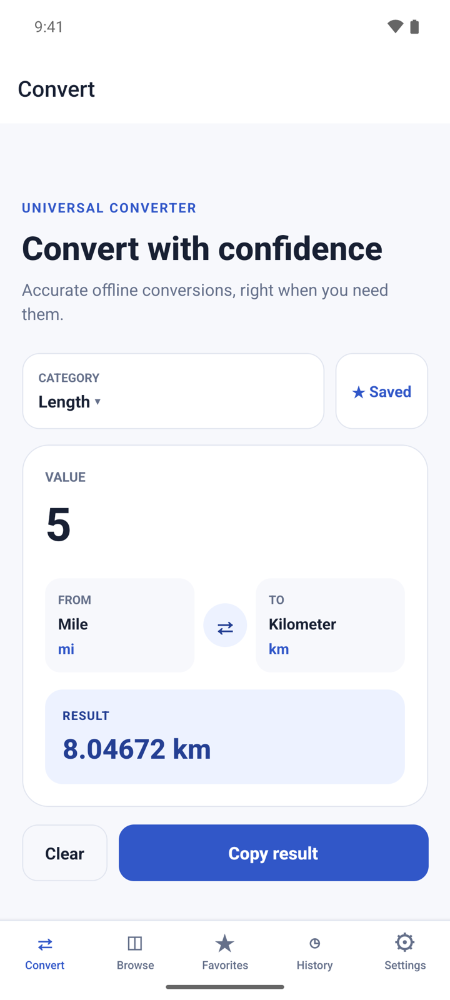
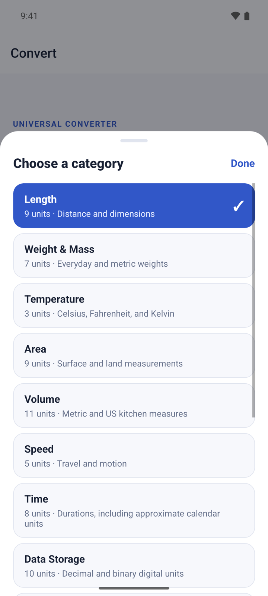
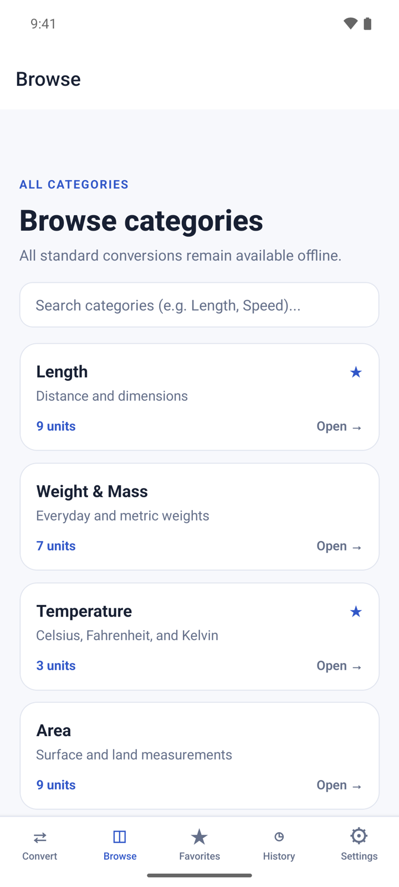
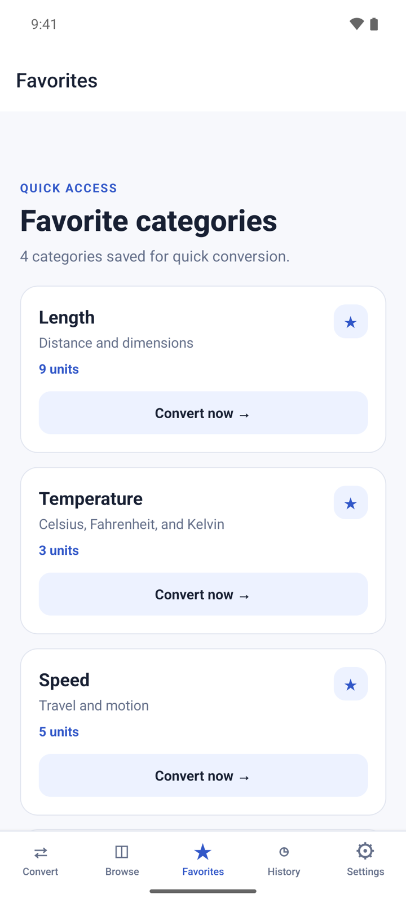
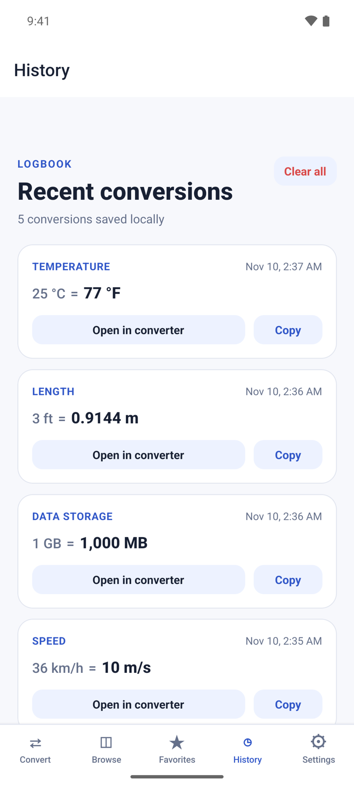
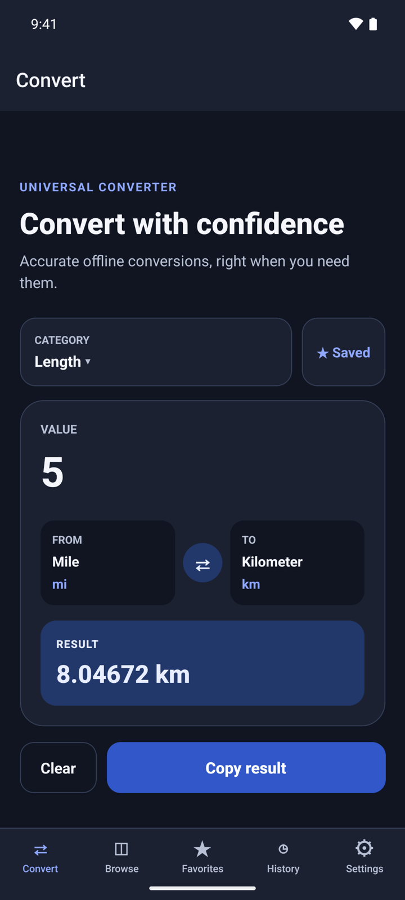

What it does
Unit Converter changes a measurement from one unit to another. Type a value, pick two units and the result appears as you type. It covers 14 categories and 96 units, from length, weight and temperature to cooking volumes, fuel consumption and data storage.
- Conversions run on your device and work without internet.
- No account. Your favorites and history stay on your phone.
- Free with small banner ads on Browse and History only. A one-time Premium purchase removes them.
Get started
- Open Unit Converter. It starts on Convert with the Length category.
- Type a number under VALUE. The answer shows under RESULT right away.
- There is nothing to allow: the app does not use your camera, location or files.

Convert a value
- On Convert, tap CATEGORY and choose one, for example Temperature.
- Tap FROM and pick the unit you have. Tap TO and pick the unit you want.
- Type the number under VALUE. Use a point or a comma for decimals, and no thousands separators: type 1500, not 1,500.
- Read the answer under RESULT.
- Tap ⇄ to swap the two units, or Clear to empty the value.

Copy a result
- Tap Copy result. The button changes to Copied.
- Paste it into any app. The copied text holds both sides, for example "5 mi = 8.04672 km".
Each result you copy is also saved to History.
Browse the categories
- Tap Browse to see all 14 categories and how many units each one has.
- Type in Search categories to filter the list by category name or description, for example "Speed".
- Tap a category to open it in the converter.

Save your favorite categories
- On Convert, choose a category and tap ☆ Save. The button changes to ★ Saved.
- Tap Favorites to see the categories you saved.
- Tap Convert now → on a card to open that category in the converter.
- To remove a favorite, tap the ★ on its card.

Reuse a past conversion
- Tap History. It lists the results you copied, newest first. The latest 100 are kept.
- Tap Open in converter to load the same category, units and value again.
- Tap Copy to copy the line again.
- To empty the list, tap Clear all and then Clear.

Change the theme
- Tap Settings.
- Under Appearance, choose System, Light or Dark. System follows your phone.

Premium
Premium is one payment, not a subscription. It removes all ads and adds nothing else: every category and unit is free.
- Open Settings and tap Remove ads under Premium. The button shows the price.
- If you bought Premium before, tap Restore purchase.
Questions
Does it work offline? Yes. All conversions run on your phone. Only ads and the Premium purchase need internet.
Why is my conversion not in History? History keeps only the results you copy. Tap Copy result on Convert to save one.
Why does the result say "Enter a valid number"? The value has something the app cannot read as a number, such as two decimal points. Type digits with at most one point or comma.
Are months and years exact? No. In Time, month and year use an average calendar length, and the result shows a note when you use them.
Can it convert currency? No. The app converts measurement units only.
Privacy
Conversions run on your device, and your favorites and history stay on your phone. The free version shows banner ads from Google AdMob. Read the full privacy policy.